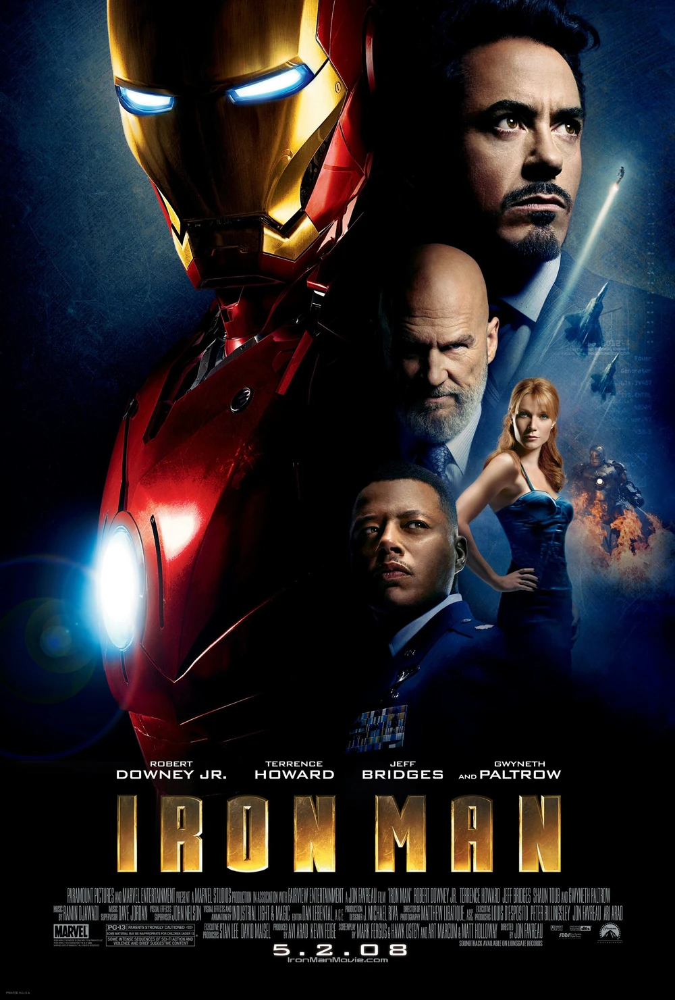
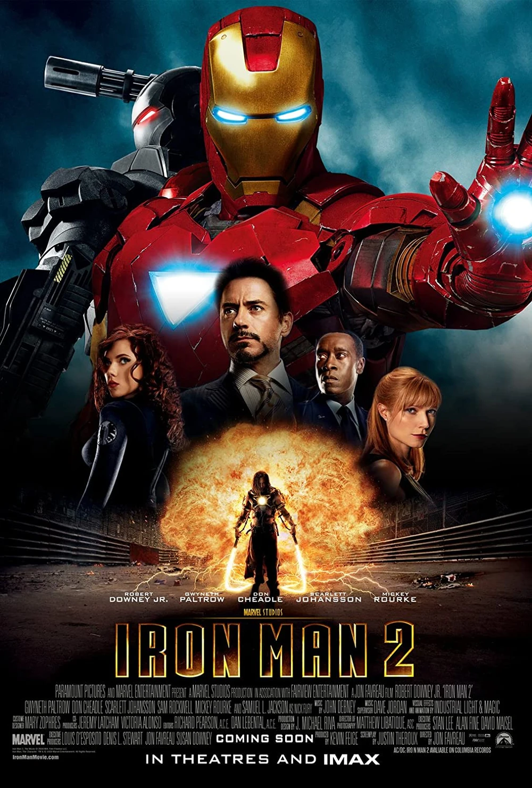
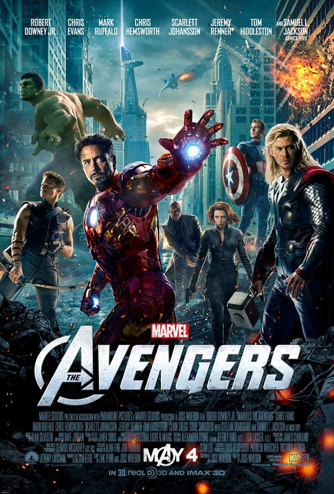
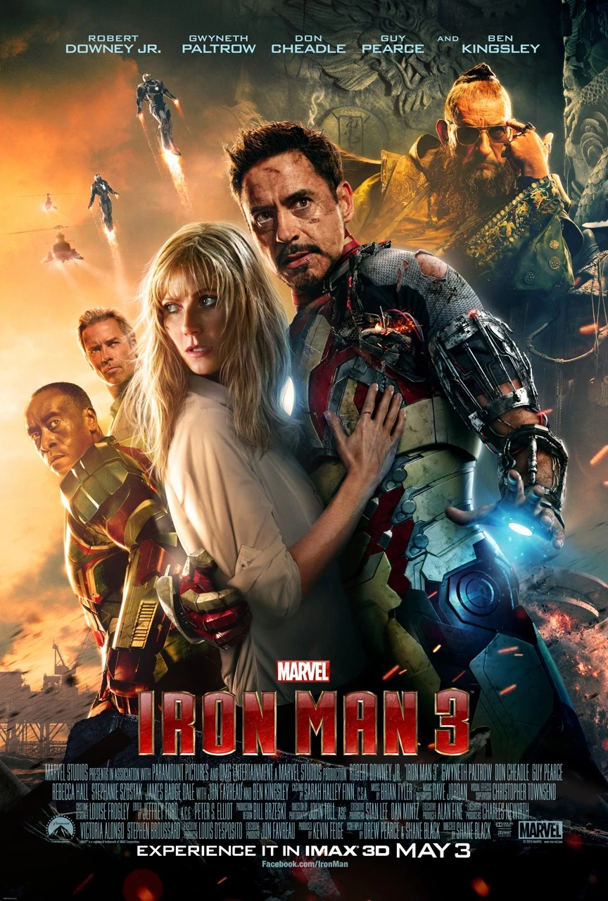
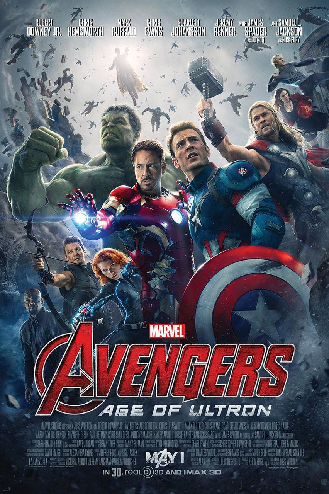
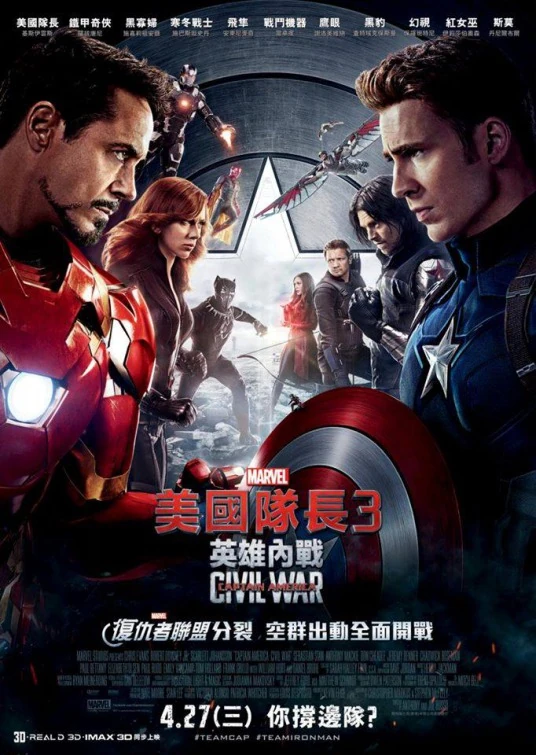
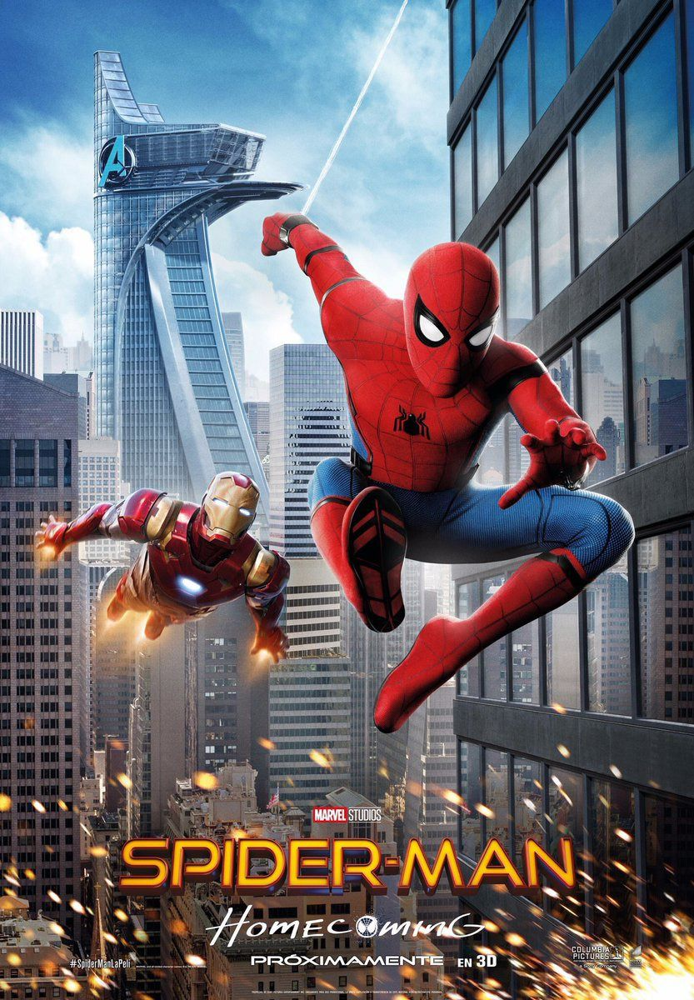
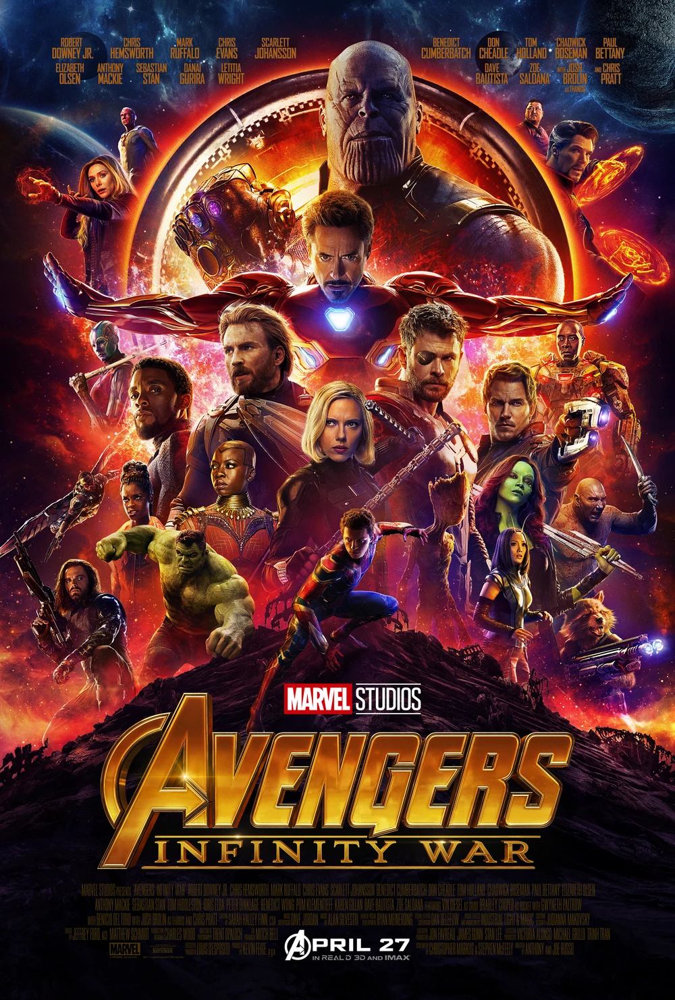
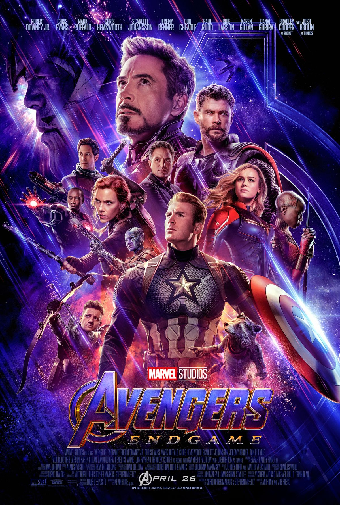

Select a movie to explore Tony Stark's appearances, chronological screenshots, and scene details.

Tony Stark builds the Mark I armor inside an Afghan cave to escape captivity, starting his legendary path as the armored Avenger.

Tony confronts palladium poisoning, Justin Hammer's rival weapon designs, Ivan Vanko's electrified lashes, and debuts his portable suitcase armor.

Tony joins Earth's newly assembled defenders to stop Loki's planetary invasion, carrying a nuclear warhead through a spatial wormhole into deep space.

Struggling with post-traumatic stress, Tony builds an army of armors to protect Pepper from Aldrich Killian's Extremis soldiers.

Seeking to engineer a shield around the planet, Tony uses the Mind Stone's artificial neural systems to build Ultron, which quickly goes rogue.

Divided over foreign oversight regulations, the Avengers break into warring factions, leading to a personal, shattering battle in Siberia.

Tony Stark takes on a fatherly mentoring role for young Peter Parker, providing a high-tech suit while offering advice on handling superhero duties.

Tony Stark deploys his nanotechnology armor, clashing with the cosmic conqueror Thanos in a desperate battle to save the universe on Titan.

Tony Stark orchestrates a time heist to recover the Infinity Stones, ultimately making the supreme sacrifice to restore half of all life to the universe.